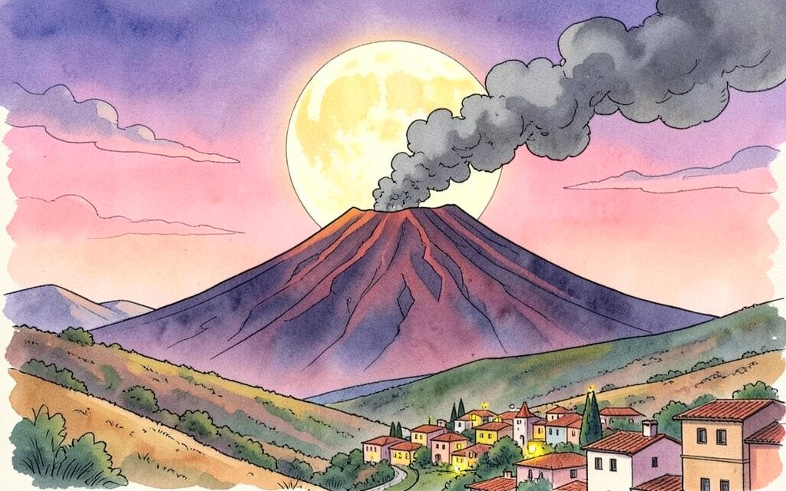
Una foto scattata vicino a Nicosia è diventata la "foto astronomica del giorno" della NASA. Dentro c'è un po' di tutto: la Luna, un vulcano e una striscia rosa che ha perfino un nome.
Nicosia (Enna). Ogni giorno, dal 1995, la NASA mette sul suo sito una foto del cielo con una spiegazione scritta da un astronomo. Il 1° ottobre è toccato alla Sicilia.
L'ha scattata il fotografo Dario Giannobile, l'ultimo fine settimana di settembre. Si vede la Luna piena di settembre, che in inglese chiamano "Luna del raccolto", salire sopra le colline. Sullo sfondo l'Etna butta fuori cenere e gas.
E la striscia rosa in basso? Si chiama "cintura di Venere". Compare dopo il tramonto dal lato opposto al Sole, proprio dove sorge la Luna piena. La prossima volta che c'è la Luna piena, guardate a est: forse la vedete anche voi.
Fonte: NASA, Astronomy Picture of the Day, 1/10/2026
Il telescopio Webb ha trovato un mondo rovente ma con l'aria intorno. Pag. 2
Viaggiavano di nascosto su una nave. Pag. 2
Il domovoj di Casa Russo parla per la prima volta. Pag. 7
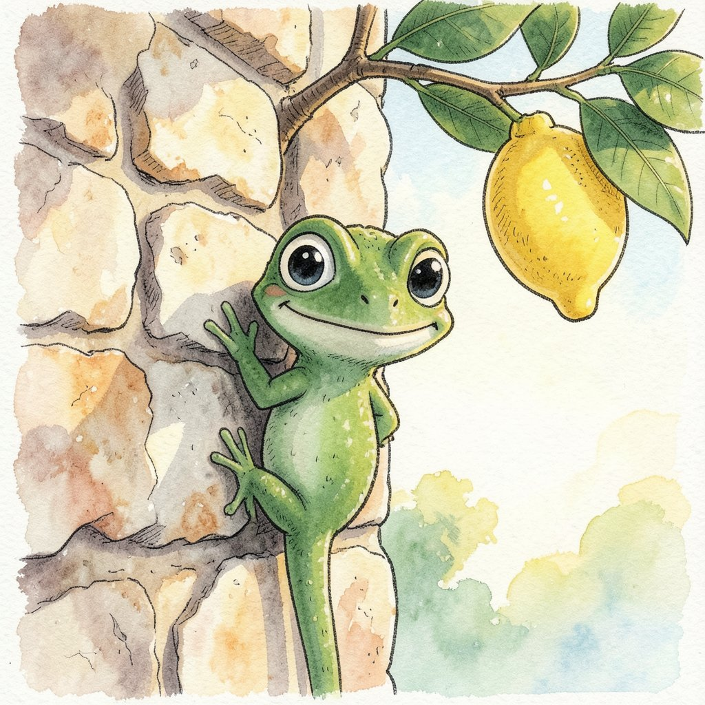
Tra un libro e l'altro passano mesi, e io volevo qualcosa da leggere ogni settimana. Qui ci sono notizie vere, con la fonte. C'è anche una notizia inventata, una sola, con il timbro BUFALA. Il geco qui accanto è Briciola, la nostra mascotte. Vlad
Si chiama HD 3167 b, è a 154 anni luce e ha i mari di roccia fusa. Ma ha anche un'atmosfera, e questo è raro.
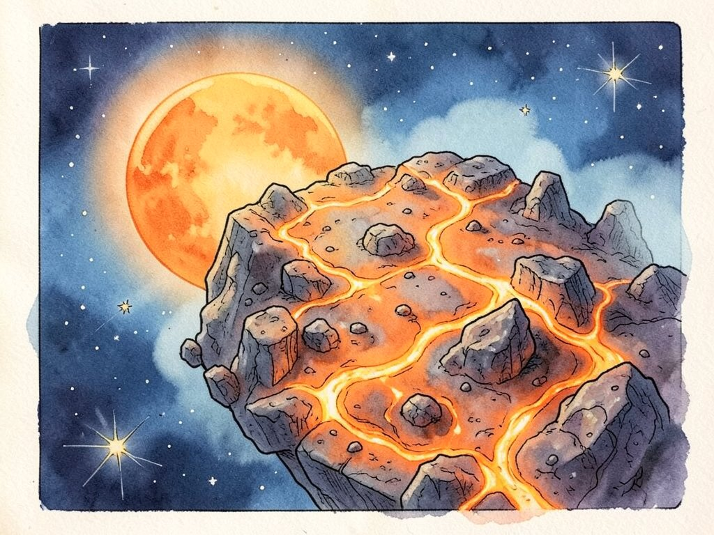
Immaginate la Terra quattro miliardi e mezzo di anni fa: niente mari d'acqua, niente alberi, solo roccia così calda da essere liquida. Gli scienziati pensano che fosse più o meno così. Il problema è che nessuno può tornare indietro a guardarla.
Però si può guardare un pianeta che le somiglia. Un gruppo dell'Università di Chicago, guidato da Brandon Park Coy, ha puntato il telescopio spaziale James Webb su HD 3167 b. È un "mondo di lava": gira così vicino alla sua stella che la superficie si scioglie.
La sorpresa è che intorno ha un'atmosfera. Di solito questi pianeti la perdono, perché la stella la "soffia" via. HD 3167 b invece è il più freddo mondo di lava con un'atmosfera mai trovato. Studiandolo, si può capire qualcosa di com'era la Terra appena nata.
Fonte: ANSA, 2/10/2026
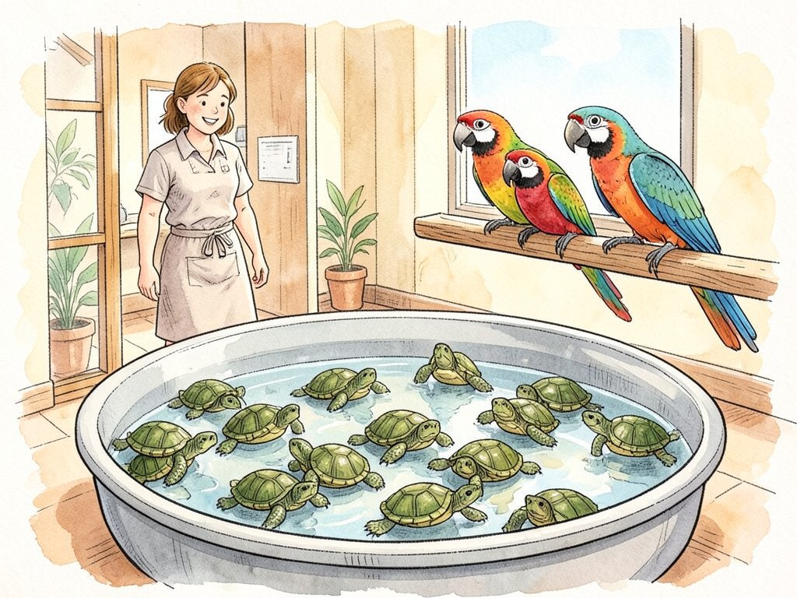
Pozzallo. Erano nascosti in un carico arrivato al porto. La Guardia di Finanza e l'Agenzia delle Dogane li hanno trovati: 300 tartarughe d'acqua dolce e 77 pappagalli. Quasi tutti i pappagalli sono di specie protette dalla Convenzione di Washington, un accordo tra i Paesi del mondo che vieta di vendere animali in pericolo senza permessi.
L'uomo che li trasportava non aveva i documenti. Solo i pappagalli, venduti di nascosto, avrebbero fruttato circa 100.000 euro. Ora gli animali sono stati affidati a un allevamento e aspettano di andare in strutture adatte a loro.
Fonte: ANSA, 5/10/2026
È la Settimana mondiale dello spazio. Il tema di quest'anno: "Rocket Revolution", la rivoluzione dei razzi.
Per tanti anni un razzo si usava una volta sola. Partiva, portava il satellite in orbita e poi cadeva in mare, a pezzi. Come comprare una macchina nuova per ogni viaggio.
Oggi alcuni razzi tornano indietro e atterrano in piedi, sulle loro gambe, pronti a ripartire. Costa meno e si spreca meno. È di questo che parla la Settimana mondiale dello spazio di quest'anno, che si festeggia dal 4 al 10 ottobre in tutto il mondo.
In Italia ci sono incontri aperti a tutti. A Siena, dal 5 all'8 ottobre, si parla di sonde, telescopi e della Stazione spaziale. A Matera l'Agenzia spaziale italiana organizza un convegno. A Frascati, vicino a Roma, nella sede dell'Agenzia spaziale europea, si può perfino giocare a Pokémon GO a tema spazio.
Fonte: Sky TG24, 4/10/2026
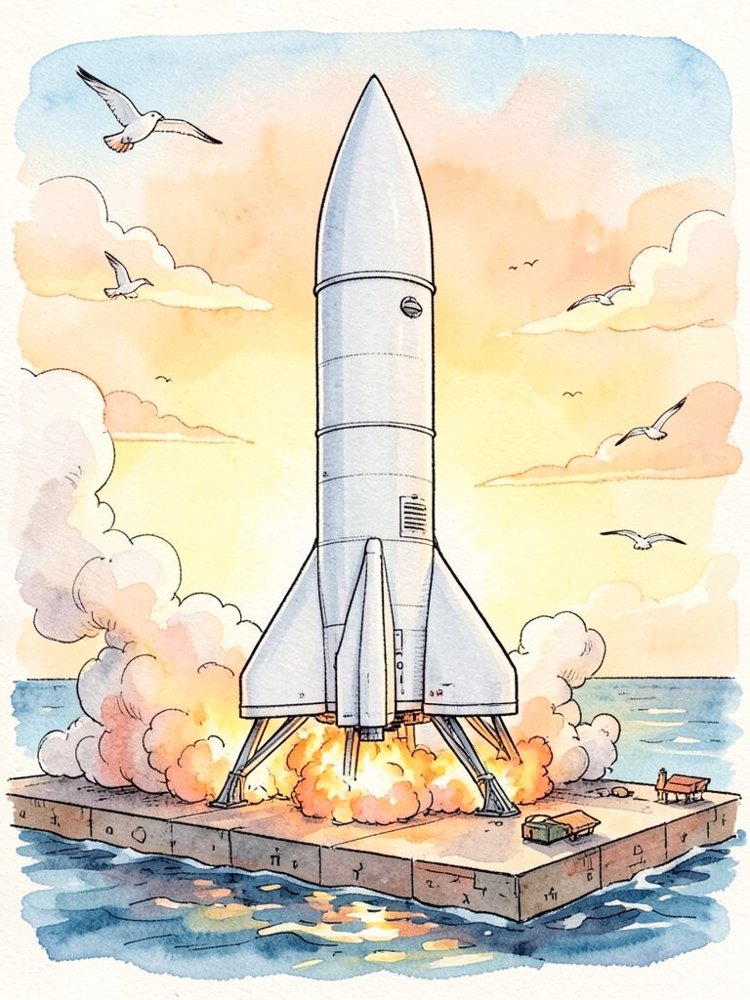
Il 4 ottobre Saturno era "in opposizione": la Terra stava in mezzo, tra lui e il Sole. Per questo sorge quando il Sole tramonta e resta in cielo tutta la notte. In questi giorni è più vicino del solito, a circa un miliardo e 260 milioni di chilometri, e brilla di più.
8-9 ottobre: stelle cadenti Draconidi. Sono lente, circa 20 km al secondo.
21-22 ottobre: Orionidi, briciole della cometa di Halley. Peccato che ci sarà quasi la Luna piena a disturbare.
Fonte: ANSA, 1/10/2026
«Vivo sui vostri muri da cent'anni e vi mangio le zanzare gratis» avrebbe dichiarato il geco, che non ha voluto dire il suo nome. Il Comune non ha risposto. Anche perché i gechi non parlano.
Fonte: nessuna. È inventata!
Dopo il tramonto guarda verso est, poi più tardi verso sud. Cerca un puntino giallino che non tremola: le stelle tremolano, i pianeti quasi no. Con un piccolo telescopio si vedono anche gli anelli.
E altre quattro cose che abbiamo controllato due volte, perché sembravano troppo strane per essere vere.
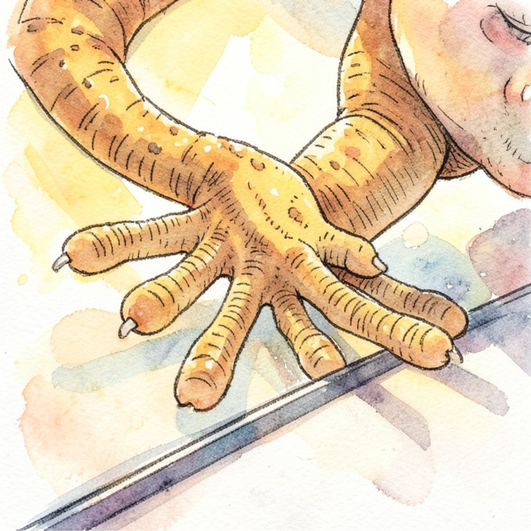
Sotto le dita il geco ha milioni di peli microscopici, e ognuno finisce con punte ancora più piccole. Ogni punta si attacca al muro con una forza minuscola, la stessa che tiene vicine le molecole. Da sola non conta niente. Tutte insieme reggono il geco a testa in giù, anche sul vetro. E si staccano appena lui piega le dita: per questo corre sul soffitto senza restare incollato.
È il vulcano attivo più alto d'Europa, se non si contano le montagne del Caucaso: più di 3.300 metri. Ma non ha un'altezza fissa. Le eruzioni a volte aggiungono roccia in cima, a volte fanno crollare un pezzo di cratere.
Castel del Monte, in Puglia, ha otto lati e otto torri, e ogni torre ha di nuovo otto lati. Se avete in tasca una moneta da 1 centesimo italiana, guardatela: c'è lui.
Il polpo ha tre cuori. Due spingono il sangue nelle branchie, dove prende l'ossigeno, il terzo lo manda al resto del corpo. Il sangue è blu perché contiene rame, mentre il nostro contiene ferro.
È il secondo pianeta più grande del Sistema solare, ma è fatto soprattutto di gas leggeri. In media è meno denso dell'acqua. Servirebbe solo una vasca da bagno più grande di lui.
Per ogni curiosità abbiamo cercato almeno due fonti diverse, per esempio enciclopedie, siti di musei e di università. Se trovate un errore, scriveteci: lo correggiamo nel numero dopo, come fanno i giornali veri.
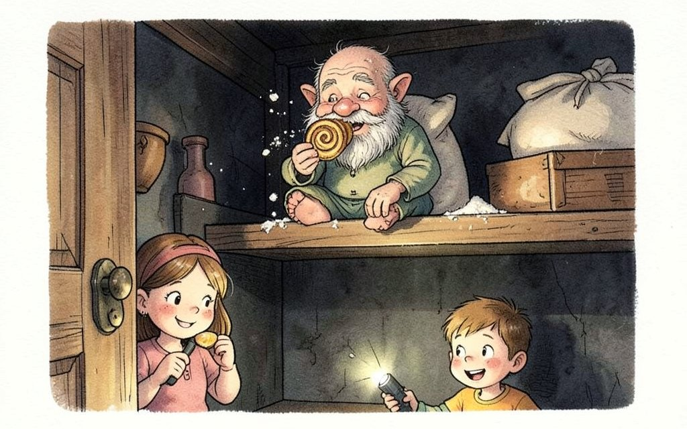
Mattia mi tirò la manica alle dieci di sera, quando avevo ancora tutta la grammatica da fare. «Vera. Nella dispensa c'è qualcuno che mastica.»
«Sarà un topo.»
«I topi non dicono "che schifo".»
Su questo aveva ragione. Prendemmo la torcia del telefono e andammo in punta di piedi. Da dietro la porta arrivava un cric, cric regolare, come qualcuno che finisce un pacco di biscotti con calma.
Aprii. Sul ripiano più alto, seduto sul sacco della farina, c'era Nonno Fomà. Aveva la barba piena di briciole bianche e in mano mezzo cannolo.
«Troppo dolce» disse, senza nemmeno girarsi. «La ricotta nei dolci. Che idea.» E diede un altro morso.
«Se non ti piace, perché lo mangi?»
Mi guardò come si guarda una persona che non capisce niente. «Per controllare. Un domovoj deve sapere cosa entra in questa casa.» Morso. «Devo controllare meglio.»
Dalla finestra arrivò una risata. Sul davanzale, con le gambe a penzoloni, c'era Donna Tina. «L'ho portato io, quel cannolo. Dillo che è buono, vecchio orso.»
Fomà diventò rosso fino alle orecchie. «Mai.»
La mattina dopo nonna Concetta trovò la vaschetta dei cannoli vuota e se la prese con papà, che giurò di non averli toccati. Io e Mattia guardavamo i cereali.
Quella sera, sul ripiano della dispensa, lasciai un cannolo nuovo. La mattina c'era solo un foglietto, scritto storto con una matita mangiucchiata:
Ancora troppo dolce. Domani ricontrollo.
FINE
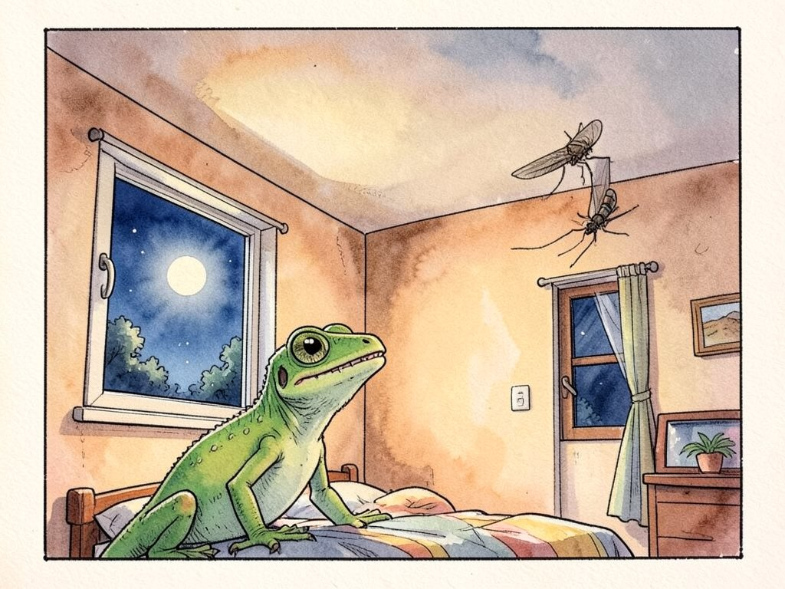
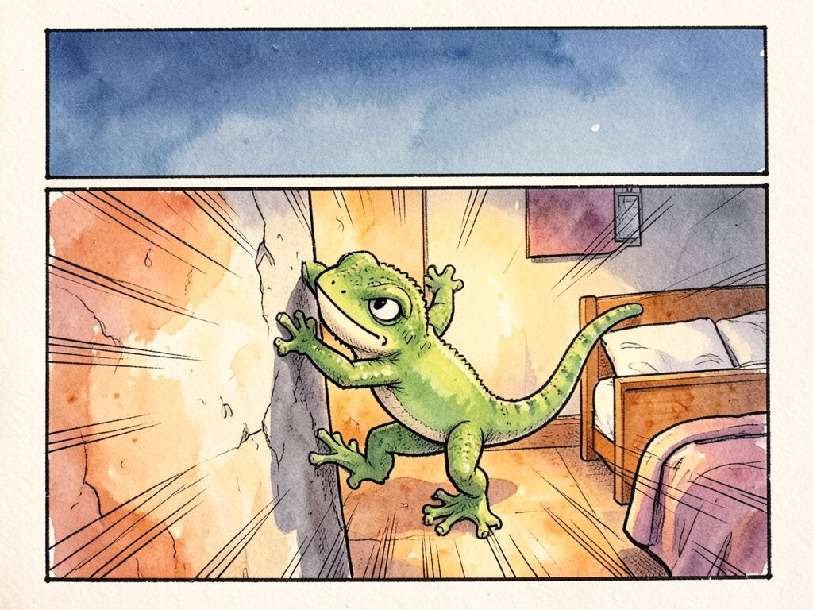
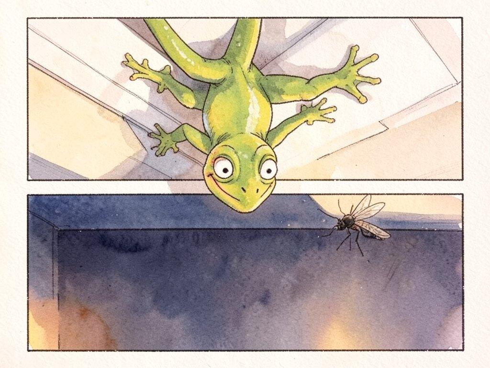
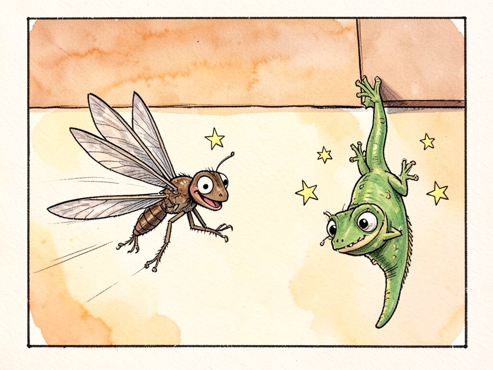
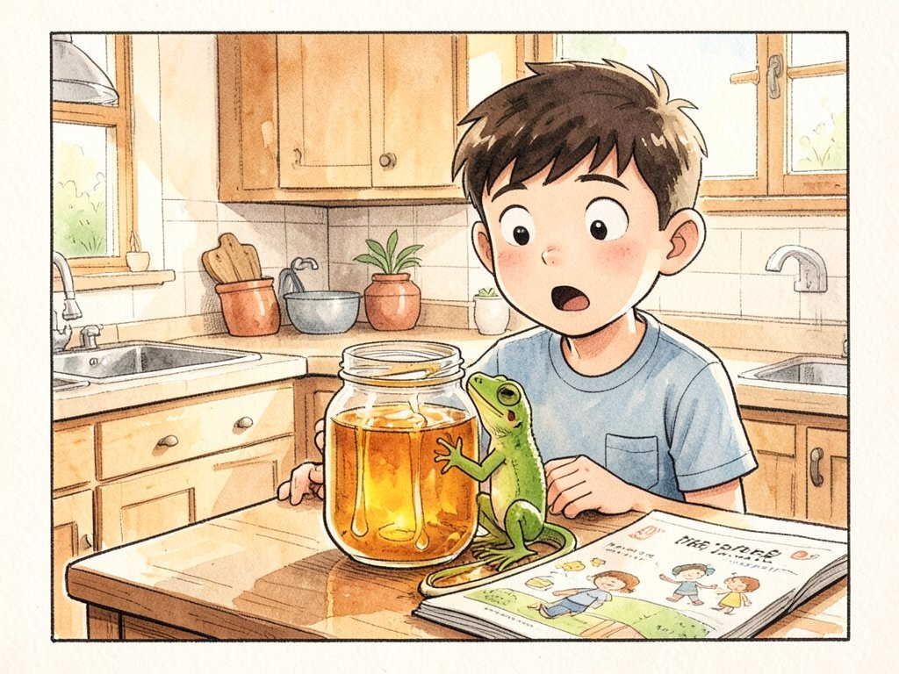
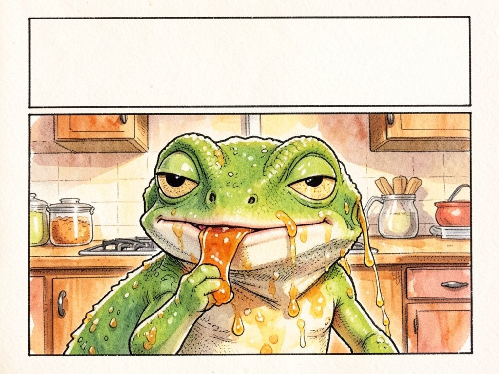
Ha accettato di parlare con noi a una condizione: cinque minuti, non uno di più, e un bicchiere di tè. Bollente.
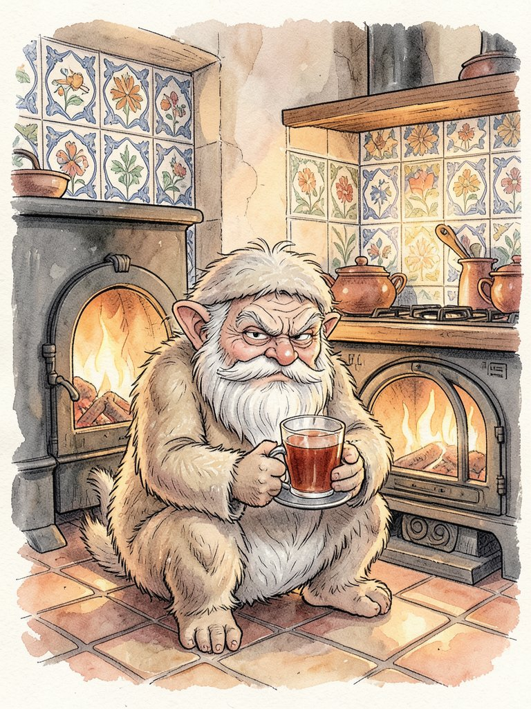
Nonno Fomà, per chi non lo sa: che cos'è un domovoj?
Lo spirito della casa. Nelle case russe ce n'è uno. Io controllo che la stufa sia calda, che le porte non cigolino e che nessuno litighi troppo. Il resto lo fanno gli umani, e lo fanno male.
Come è arrivato fino in Sicilia?
In una scarpa. Un lapot', la scarpa di corteccia. Quando si cambia casa, da noi, il domovoj si porta così. La babuška Galina mi ha messo nella valigia, tra i calzini. Non lo auguro a nessuno.
Si trova bene a Taormina?
Troppo sole. Troppi turisti. E le Donne di Fora entrano dalla finestra senza bussare.
Niente che le piaccia?
(Lunga pausa.) Il mare non è male. Questo non scrivetelo.
L'abbiamo già scritto.
Lo sapevo. I giornalisti sono peggio dei gatti.
Che cosa mangia un domovoj?
Pane nero con il sale. Latte, se qualcuno si ricorda di lasciarlo vicino alla stufa. Sui cannoli non dico niente.
Un consiglio per i nostri lettori?
Salutate la casa quando entrate. Le case sentono tutto. E rimettete le scarpe al loro posto, che poi inciampo io.
Nonno Fomà è uno dei personaggi della collana Casa Russo di Vlad Editore. La sua storia comincia nel libro 1, Il domovoj nella scarpa.
Le risposte sono tutte in questo numero.
Scrivi le risposte, una per riga. Le caselle gialle, lette dall'alto in basso, nascondono una parola.
| 1 | ||||||||
| 2 | ||||||||
| 3 | ||||||||
| 4 | ||||||||
| 5 |
1. Esce rovente dal vulcano (4)
2. La Sicilia lo è, circondata dal mare (5)
3. Dove vive il popolo di Nico (9)
4. Il Paese della babuška Galina (6)
5. La forma di Castel del Monte (8)
Cammino sul soffitto senza cadere, non ho colla e non ho ventose. Di giorno dormo, di notte faccio la caccia. Chi sono?
Sono nascoste in orizzontale, in verticale e in diagonale.
ETNA · GECO · LUNA · POLPO · SATURNO · RAZZO · LAVA · CANNOLO · DOMOVOJ · BRICIOLA
| I | E | T | N | A | C | Q | P | D | T | I |
| C | A | N | N | O | L | O | T | O | Q | T |
| Q | A | G | O | M | F | I | A | M | R | A |
| Z | P | E | U | A | B | L | N | O | U | E |
| U | E | C | E | I | O | I | O | V | U | R |
| O | F | O | V | I | C | H | R | O | A | A |
| F | S | M | C | S | Z | Q | Z | J | H | Z |
| H | M | I | S | A | T | U | R | N | O | Z |
| R | R | R | H | P | L | U | N | A | M | O |
| B | T | V | P | O | L | P | O | Z | I | Z |
| H | B | C | L | A | V | A | S | Z | N | F |
Questa pagina è vuota perché siete arrivati per primi. Dal prossimo numero sarà vostra: lettere, domande, disegni, idee per le prossime storie. Pubblichiamo le più belle, con il vostro nome se volete, o solo con le iniziali.
Si scrive dalla pagina Contatti del sito di Vlad Editore.
Quale personaggio dei libri di Vlad Editore vorreste intervistato nel prossimo numero? Vince quello con più voti.
Roald Dahl · romanzo
Sofia non riesce a dormire e guarda fuori dalla finestra, all'ora in cui non si deve guardare. Vede un gigante. E il gigante vede lei. La porta via, nel Paese dei Giganti.
Per fortuna è il Grande Gigante Gentile: invece di mangiare i bambini, soffia sogni nelle loro camere. Gli altri giganti invece i bambini li mangiano eccome. Il GGG parla in un modo tutto suo, sbagliando le parole, e solo per questo vale la pena leggerlo.
Qui ci sarà il disegno di un lettore. Disegnate Briciola, Nonno Fomà o chi volete voi, fate una foto e mandatecela.
Arriva lo sport, con i risultati della settimana. E poi nuove notizie dal cielo, un altro racconto, un nuovo fumetto di Briciola e l'intervista scelta da voi.